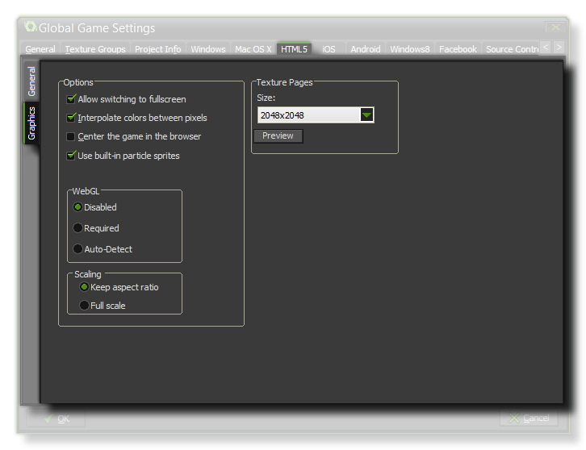
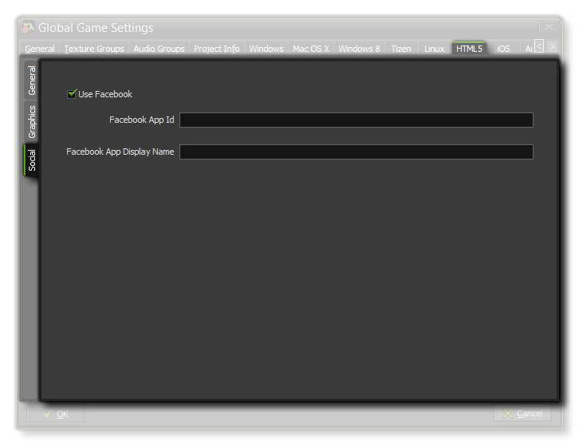

At the top of the window you can set the File options for your HTML5 game, which includes:
At the top of the window you can set the File options for your HTML5 game, which includes:
This HTML5 tab is split into two separate sub-tabs (accessible on the left of the window) to make changing and updating the information for your game clearer and less complicated. These tabs are explained in the following sections.
At the top of the window you can set the File options for your HTML5 game, which includes:
- adding a custom index.html to use instead of the pre-defined one that GameMaker: Studio generates by default. This can be very useful if you have a website design implemented or want to include certain features in all your HTML5 builds.
- choosing a Loading Bar Extension. This should have been added in as an extension to the GameMaker: Studio resource tree (there is a demo of this included with the program) and will override the standard loading bar when selected.
- selecting a new name for the title bar of the tab for your game in the browser.
- selecting a new name for the folder where your HTML5 game files will be stored (default is "html5game").
- selecting a new name other than the default "index.html".
Once that is done you will need to give your game a favicon and a Splash Screen. The icons should be authored as an *.ico file and can be 16x16, 32x32, 48x48, or 64x64 pixels
in size, and 8-bit, 24-bit, or 32-bit in colour depth. The splash screen should be the size of the canvas that is going to hold your game and will override any loading bars if you tick the Use Splash
Screen option (ie: you can have a loading bar, OR a splash screen, but not both). Smaller or larger images are permitted but will be scaled to fit.
If you are testing a game locally (ie: clicking on the index file from your computer rather than a server - not recommended), then you normally get a warning informing you that things won't work as you
may expect due to browser security for local files. You can suppress this warning by un-checking the Display "running outside server" alert option.
Should you require the cursor to be disabled while the mouse is over the canvas area, you can un-check the option "Display Mouse Cursor".
You also have the further options to send all debug output to the JS console of your browser, and to prepend the *.js output with any extra JavaScript necessary for your game. For example, a
Chrome Store app may require that you add window.localStorage = undefined; to the output JS, for which you would use this option.
 Here you can change the following details related to how your game will be displayed (note that not all browsers will display your game in the same way, so test these options on as many browsers as possible to make sure that they have the desired effect).
- Allow switching to fullscreen - Checking this will allow the user to toggle the game from windowed to fullscreen mode using <CTRL> + <CMD> + <F> on Mac and F10 on Windows.
- Interpolate colours between pixels - Turns on interpolation, which basically "smooths" pixels. for crisp pixel graphics, it should be off, but if you have nice alpha blends and smoothed edge graphics it is better left on.
- Center the game in the browser - Checking this will automatically center the game screen within the browser running the game.
- Use Built In Particle Sprites - This option will export the sprites required for the built in particle system along with your game. These sprites are stored in individual texture pages, meaning that they are not the most efficient method of generating particles for this platform, therefore it is recommended that (unless using WebGL) you un-check this option and use your own particle sprites which will be stored on the main texture pages all together for your game.
- WebGL - Choose whether to switch off WebGL support, make it optional (auto-detect), or make it a requirement for your game. It should be noted that to test performance under all circumstances, you should have this as disabled, then normally set it to auto-detect for publishing. Making it a requirement may reduce considerably the compatibility that your game has with different browser types.
- Scaling - Your game can be configured to scale the draw canvas automatically to maintain the aspect ratio within the browser, or you can select to have it stretch to fit. The stretch to fit option will not full screen the game in the browser, but rather stretch what is drawn to fit the canvas size, as defined by the first room of the game.
Finally there is the option to set the size of the Texture Page. The default (and most compatible) size is 2048x2048, but you can choose from anywhere between 256x256 up to a
whopping 8192x8192! There is also a button marked View which will generate the texture pages for this platform and then open a window so that you can see how they look. This can be
very useful if you wish to see how the texture pages are structured and to prevent having texture pages larger (or smaller) than necessary.
NOTE: Be aware that the larger the size of the texture page, the less compatible your game will be.

The social tab is used for setting up Facebook communication in your game. If you require the Facebook functions, you need to click the "Use Facebook" checkbox and then supply the Facebook
App ID and Facebook App Display Name. Note that all Facebook functionality is accessed via an extension, and when you first check the Use Facebook box you will be prompted to
download and install the Facebook extension from the Marketplace.